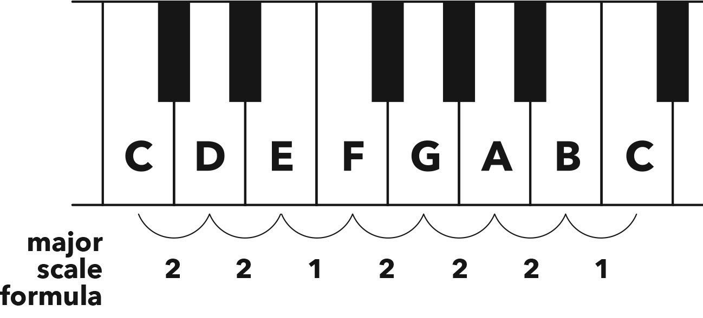

Major Scale 大调
Hack
A scale is a family of notes that work together.
音阶是一组能够和谐共存的音符。
The original family is the major scale, often referred to as the ‘happy scale’ due to its cheerful sound.
最基础的音阶是大调音阶，通常被称为“快乐音阶”，因为它的声音听起来很愉快。
All major scales are exactly the same scale, made up from exactly the same formula but starting on a different note.
所有大调音阶都遵循相同的模式，只是从不同的音符开始。
This formula is derived from playing all the white notes on a piano, beginning with C.
这个模式是从钢琴上弹奏所有的白键得出的，从 C 音开始。
Therefore, the major scale formula (counted in steps, aka semitones) is: 2 2 1 2 2 2 1
因此，大调音阶的公式（以步数计算，即半音）是：2 2 1 2 2 2 1

Figure 4.1 Major scale formula derived from white notes on a piano, starting on C
图 4.1 大调音阶公式，从钢琴白键的 C 音开始得出

Figure 4.2 To find the D major scale, start the major scale formula on D
图 4.2 要找到 D 大调音阶，以 D 为起始音应用大调音阶公式
When writing out music, each note is assigned the number of its degree in the scale, from 1 to 7.
在音乐记谱中，每个音符都会被赋予其在音阶中的度数，从 1 到 7。
We then use 8 to complete the scale and represent a version of the root an octave higher.
然后我们用 8 来完成音阶，表示比根音高一个八度的音符。
This is called spelling, and is the numerical way of writing music (e.g. major scale = 1 2 3 4 5 6 7 8).
这被称为拼谱法，是用数字记谱的方法（例如，大调音阶=1 2 3 4 5 6 7 8）。
VOCAB EXTRAS 词汇补充
Root / root note / tonic: first note of a scale (e.g. D is the root in D major)
根音 / 根音符 / 主音：音阶的第一个音符（例如 D 大调中的 D 是根音）
Interval: space between any two notes, measured in semitones (e.g. twelve semitones is the interval of an octave)
音程：两个音符之间的距离，以半音为单位（例如，十二个半音是一个八度音程）
Semitone: smallest interval in western music and is an interval of one step (e.g. C to C♯)
半音：西方音乐中最小的音程，是一个音阶的音程（例如 C 到 C♯）
Tone / whole tone: interval of two semitones (e.g. C to D)
全音：两个半音的音程（例如 C 到 D）
Chapter
As much as we love playing with notes, that’s how much Pythagoras loved playing with numbers back in the good ol’ BCE days.
尽管我们喜欢玩音符，但在公元前的美好时光里，毕达哥拉斯同样热衷于玩弄数字。
The Greek overachiever discovered that repeating a 3:2 frequency ratio (the next simplest after that ultra-pure 2:1 octave ratio) produced a pleasant sounding set of notes that he could make melodies from.
这位希腊成就非凡的人发现，重复 3:2 的频率比（在超纯的 2:1 八度比之后的下一个最简单的比率）能产生一组悦耳的音符，他可以用这些音符来创作旋律。
This is further proof that music at its core is simple.
这进一步证明了音乐在本质上是简单的。
The special notes are: C D E F G A B C.
这些特殊的音符是：C D E F G A B C。
This would later become known as the major scale, or ‘happy scale’ due to its cheerful sound.
这后来被称为大调音阶，或因其欢快的声音而被称为“快乐音阶”。
Those notes probably look familiar too, as they’re all the piano’s white notes.
这些音符可能看起来也很熟悉，因为它们都是钢琴上的白键。
Thanks to equal temperament tuning, we no longer need to calculate our scales using ratios.
由于十二平均律调音法，我们不再需要使用比率来计算我们的音阶。
We simply use steps, aka semitones.
我们只需要使用步骤，即半音。
As the piano keyboard is designed around C major, let’s start there.
由于钢琴键盘是以 C 大调为基础设计的，我们就从这里开始。
By analysing the semitones between the white notes, we’ll discover the underlying formula for all major scales.
通过分析白键之间的半音，我们将发现所有大调音阶的基本公式。
There are two steps (semitones) from C to D, as there’s a black note in between, and there is one step (semitone) from E to F, and so on.
从 C 到 D 有两个半音，因为中间有一个黑键，从 E 到 F 有一个半音，依此类推。
Here is the complete major scale formula: 2 2 1 2 2 2 1
这是完整的大调音阶公式：2 2 1 2 2 2 1
Now we can take this semitone sequence and start anywhere we want, like on D, for a D major scale:
现在我们可以用这个半音序列，从我们想要的任何地方开始，比如从 D 开始，得到 D 大调音阶：
Finally, here’s some more terminology to further impress your friends with.
最后，这里还有一些术语，可以让你进一步给朋友留下深刻印象。
The first note of a scale is called its root or root note, or sometimes, tonic.
音阶的第一个音符称为根音或根音符，有时也被称为主音。
An interval is the space between any two notes, measured in semitones (e.g. twelve semitones is the interval of an octave).
音程是指任意两个音符之间的距离，以半音为单位测量（例如，十二个半音是一个八度音程）。
The interval of one step is a semitone, and the interval of two semitones can be called a tone, or whole tone.
一步的音程是一个半音，两步的音程可以称为一个全音或大音程。
The spelling of a scale or chord is the numerical way of writing it.
音阶或和弦的拼写是用数字来表示它的方法。
Each note is assigned the number of its degree in the scale, from 1 to 7.
每个音符被分配其在音阶中的度数，从 1 到 7。
We then use 8 to complete the scale and represent a version of the root an octave higher.
然后我们使用 8 来完成音阶，并表示根音的一个八度更高的版本。
The 1 and 8 are, of course, the same note, so technically a major scale only has seven different notes.
当然，1 和 8 是相同的音符，所以技术上讲，大调音阶只有七个不同的音符。
Using numbers to represent the notes of a scale allows us to detach melodies and chords from specific pitches, revealing their underlying contours and shapes.
使用数字来表示音阶中的音符，可以使旋律和和弦脱离特定的音高，揭示它们的基本轮廓和形状。
This is one of the most vital concepts in understanding and composing music, as it gives you insight into your own preferences for certain musical patterns.
这是理解音乐与作曲的关键概念之一，因为它能让你洞察自己对某些音乐模式的偏好。
And as a bonus, spelling music also enables you to move songs up or down in pitch, to better suit a singer’s range.
另外，音符的记谱法还可以让你将歌曲的音高上下调整，以更好地适应歌手的音域。
For example, if your melody started with the 1 followed by the 3, in C major, but you found that it was too low for your voice, you could move it up to D major and sing its 1 and 3 instead.
例如，如果你的旋律以 1 开始，接着是 3，在 C 大调中，但你发现太低了，那你可以把它移到 D 大调，并唱 D 大调的 1 和 3。
The melodic contour and resulting emotion will be identical.
旋律线条和最终的情感将保持不变。
However, if you referred to the notes in our C major melody as C and E (instead of 1 and 3), then you can’t move them directly into D major.
然而，如果你将 C 大调旋律中的音符称为 C 和 E（而不是 1 和 3），那么你就不能直接将它们移到 D 大调。
You’d first have to work out what degrees C and E are in C major, then take those numbers over to D major and work out the new notes.
你得先搞清楚 C 和 E 在 C 大调中的音级，接着用这些数字去找出 D 大调中的相应音符。
Numbers simplify music to the point of having only a single major scale.
数字将音乐简化到只有一个大调音阶。
Rather than learning twelve different major scales – one for each note – we learn only one and apply its formula to whatever note we want to start from.
我们不需要学习十二种不同的大调音阶（每个音一个），而是只学一种，并将其公式应用于我们想要开始的任意音符。
So the next time you’re walking down the street and someone asks you to spell a major scale, reply with 1 2 3 4 5 6 7 8 – and then run away as fast as you can, cos what kind of weirdo goes up to strangers and asks them to spell things?!
所以，下次如果你走在街上，有人让你拼出大调音阶，你就回答 1 2 3 4 5 6 7 8，然后赶紧跑，因为只有怪人才会找陌生人让他们拼音阶吧？！